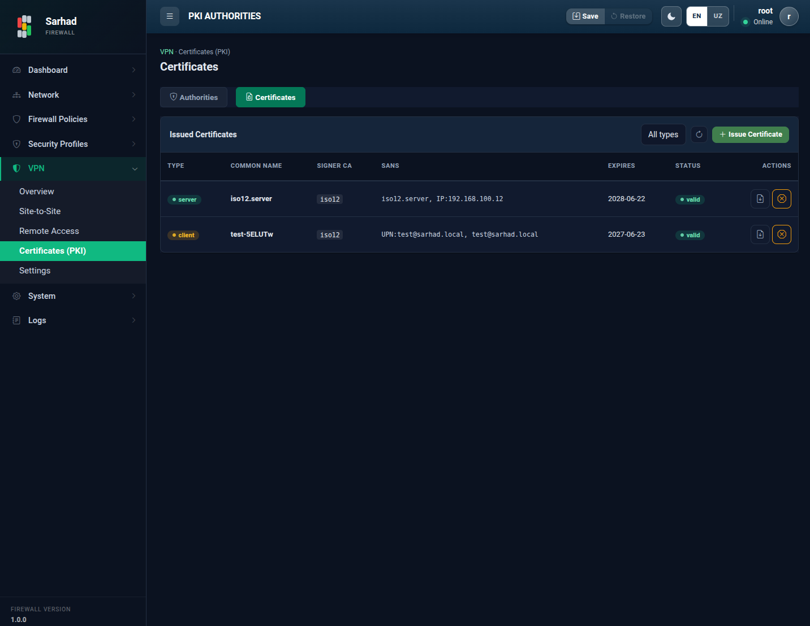

4. Sertifikat markazlari (PKI / Authorities)
Bu sahifa VPN ulanishlarini autentifikatsiya qilish uchun CA va sertifikatlarni
boshqaradi. Bu bo’limga o’tish uchun chap menyudan VPN → Authorities
bo’limini tanlang (/pki/authorities). Sahifa ikki qismdan iborat:
Certificate Authorities (CA’lar) va Issued Certificates (berilgan
sertifikatlar).

4.1. Asosiy tushunchalar
CA (Certificate Authority) — sertifikat beruvchi markaz. CA boshqa sertifikatlarni imzolaydi va ularning haqiqiyligini kafolatlaydi.
Server sertifikati — server (masalan, VPN gateway) o’zini tasdiqlash uchun ishlatadigan sertifikat.
Mijoz sertifikati — foydalanuvchi yoki peer’ni tasdiqlash uchun ishlatiladigan sertifikat.
CRL (Certificate Revocation List) — bekor qilingan sertifikatlar ro’yxati.
4.2. CA yaratish
Create (Authority) tugmasini bosing.
Quyidagilarni kiriting:
Name — CA’ning ichki nomi (masalan,
primary).Subject (CN) — CA nomi (masalan,
Sarhad Local CA).Key algorithm — kalit algoritmi.
Validity (days) — amal qilish muddati (kunlarda).
Qo’shimcha: Country, Organization, State/Province, Locality, Organizational Unit.
Create tugmasini bosing.

4.3. Sertifikat berish (Issue)
CA yaratilgach, undan sertifikat berish mumkin:
Issue (certificate) tugmasini bosing.
Type — sertifikat turini tanlang:
Server — IKE (VPN) gateway uchun.
Client — foydalanuvchi yoki peer uchun.
Signer CA — sertifikatni imzolaydigan CA’ni tanlang.
Common Name (masalan,
vpn.sarhad.local) va amal qilish muddatini kiriting. Kerak bo’lsa DNS SANs, IP SANs, Email kabi qo’shimcha maydonlarni to’ldiring.Sertifikatni bering.

Berilgan sertifikatlar Issued Certificates ro’yxatida turi, Common Name, imzolagan CA va holati bilan ko’rsatiladi. Sertifikatni yuklab olish (download) yoki VPN sozlamalarida ishlatish mumkin.
{kind=link}

4.4. Sertifikatni bekor qilish (Revoke)
Agar sertifikat xavf ostida qolsa yoki endi kerak bo’lmasa, uni ro’yxatdan tanlab Revoke tugmasini bosing. Bekor qilingan sertifikat CRL’ga qo’shiladi va undan keyin ishonchsiz deb hisoblanadi.
Note
CA’ning maxfiy kalitini xavfsiz saqlang. Agar maxfiy kalit o’g’irlansa, tajovuzkor soxta sertifikatlar yaratishi mumkin. Shubha tug’ilsa, CA’ni bekor qiling va yangisini yarating.